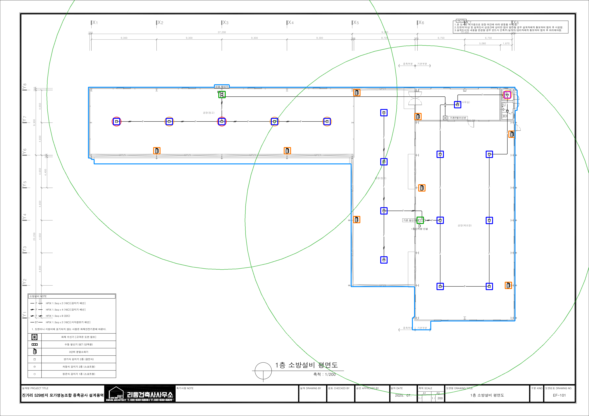

파일: sample_g2b_jingari529.pdf / 4쪽 / 축척 1/200 / 도면 인식 바닥면적 1153㎡ / 용도 공장 / 부착높이 6.0m / 검토일 2026-11-24
인식한 기호: 3단위 분말소화기 8개, 수동 발신기 SET (단독형) 2개, 연기식 감지기 2종 (광전식) 16개, 차동식 감지기 2종 (스포트형) 1개, 정온식 감지기 1종 (스포트형) 0개 / 글자 위치로 추가(추정): 기존 발신기
| 항목 | 기준(근거) | 측정 결과 |
|---|---|---|
| 감지기 감지면적 | 부착높이 6.0m, 기타구조 기준 1개당 바닥면적 (NFTC 203 표 2.4.3.5, 표 2.4.3.10.1) | 감지기 17개, 1개가 맡는 면적 25~85㎡ (실 구분 없이 가까운 감지기로 나눈 근사) → 기준보다 10% 넘게 초과 2개 |
| 항목 | 기준(근거) | 측정 결과 |
|---|---|---|
| 감지기 감지면적 | 부착높이 6.0m, 기타구조 기준 1개당 바닥면적 (NFTC 203 표 2.4.3.5, 표 2.4.3.10.1) | 감지기 17개, 1개가 맡는 면적 25~85㎡ (실 구분 없이 가까운 감지기로 나눈 근사) → 기준 초과 10% 이내 4개(실제 치수로 다시 계산 필요) |
| 수신기 기록장치 | 도면 주기와 실제 장비 일치 | 주기에 '기록장치' 요구가 있는데 기존 수신반 재사용으로 표기됨 → 기존 수신반 사양 확인 필요 |
| 항목 | 기준(근거) | 측정 결과 |
|---|---|---|
| 발신기 수평거리 | 층 각 부분에서 25m 이하 (NFTC 203 2.8 발신기) | 발신기 2개, 가장 먼 지점 23.2m, 25m 밖 면적 0.0㎡ |
| 소화기 보행거리 | 소형소화기 보행거리 20m 이내 (NFTC 101 2.1.1.4.2) | 소화기 8개, 건물 안 최단 이동거리 최대 16.1m, 20m 넘는 면적 0.0㎡ (내부 벽·출입문은 반영 안 한 근사) |
| 소화기 능력단위 | 용도 '공장' 1단위당 100㎡ (NFTC 101 표 2.1.1.2) | 바닥면적(도면 인식) 1153㎡ → 필요 12단위, 설치 24단위 |
주황 선: 인식한 건물 영역 / 초록 원: 발신기 25m 범위 / 빨강 칠: 발신기 범위 밖 / 주황 칠: 소화기 보행거리 20m 초과 / 빨강 원: 감지면적 초과 감지기

제작: 김재환 (소방안전관리자 1급, 소방설비기사 전기). 참고용 자동 검토이며 최종 판단은 화재안전기술기준 원문과 관할 소방서 확인이 필요합니다. 보행거리는 내부 벽·문을 반영하지 않은 근사값입니다.